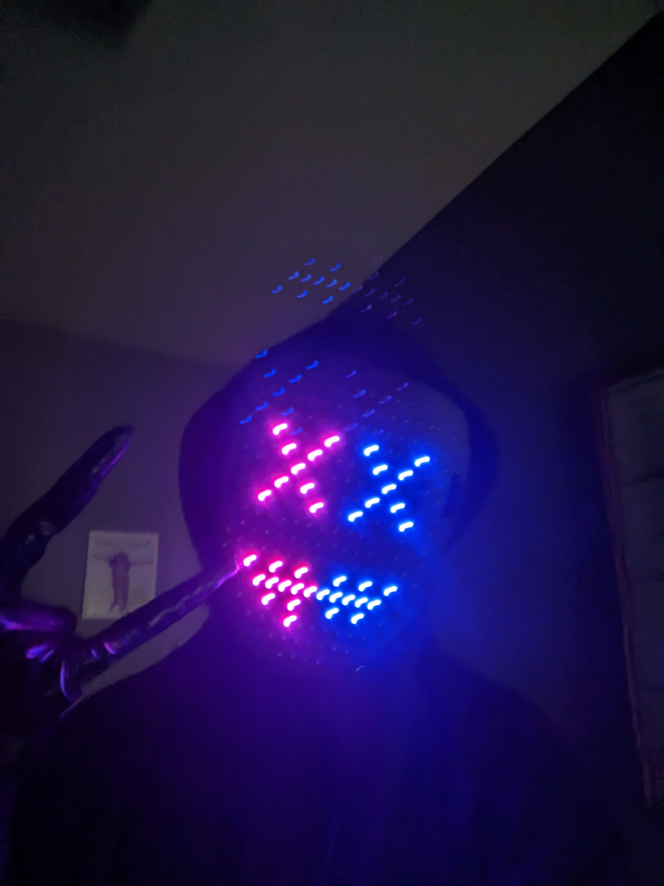
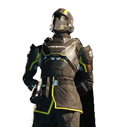

Me
Empty For Spacing
My name is Kaden Smiley and I enjoy coding (obviously). I also enjoy hanging out with my friends and learning to code. I have always been interested in technology and wanted to know how it worked. I enjoy the challenge of coding and learning new languages, The many uses of coding are also very helpful in my daily life and I want to know how to capitalize on that.
West-Mec
A Pretty Cool Place
I have learned a lot at West-Mec. The people there are pretty cool and the curriculum is well made. I received certifications in Python, HTML, and CSS there. I also received my Java certification, but that was at my high school. Having the long class periods give me more time to learn and I find the challenge entertaining.
Favorite Videogame
Helldivers 2
Despite the fact that my computer can barely run it, Helldivers 2 has remained one of my favorite games for a long time. With its exhilarating gameplay and unique concept, I find it fun to play solo or with my friends. I also really like how the developers listen to their community. Their methods of limiting micro-transactions is also neat and refreshing.
Favorite Language
JavaScript

I feel that JavaScript is one of the most simple languages. It was also my first language, so that may be a reason for some bias. Python occasionally is more confusing with its wording, and Java is mostly unpleasant to work with. I find JS to be a happy medium. You can also use it for a lot of stuff and it makes websites interesting.